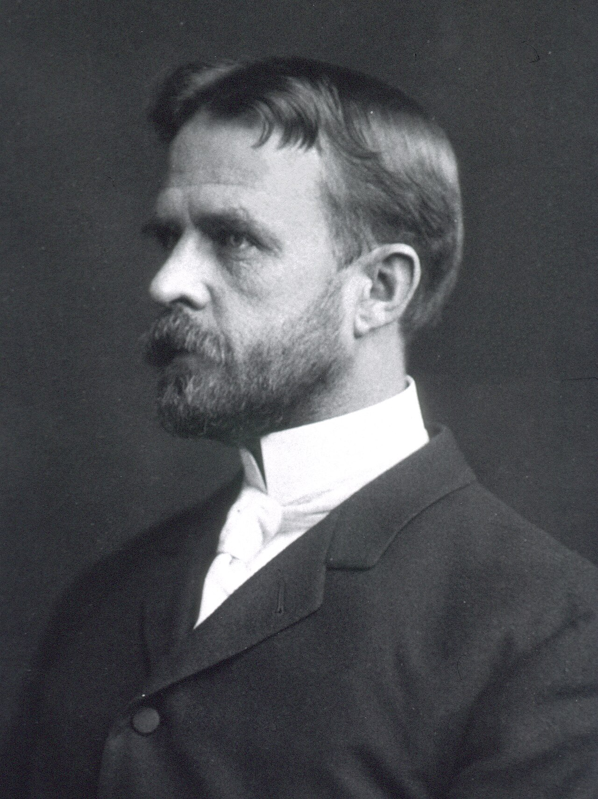

基因在染色体上
本期导读
萨顿假说 · 摩尔根果蝇实验 · 现代解释

视频原话 · 导读3 句
- 同学们好！这节课梳理人教版必修二第二章第二节——基因在染色体上。7.2s
- 高考常考萨顿的假说、摩尔根的果蝇杂交实验和孟德尔遗传规律的现代解释。7.3s
- 我们按七个考点梳理，每个考点都讲清楚怎么考、怎么做。5.6s
萨顿的假说01#
| 比较项目 | 基因 | 染色体 |
|---|---|---|
| 独立性 | 杂交中保持完整性和独立性 | 配子形成和受精中形态结构相对稳定 |
| 存在 | 体细胞中成对，配子中只有一个 | 体细胞中成对，配子中只有一条 |
| 来源 | 一个来自父方，一个来自母方 | 同源染色体一条来自父方，一条来自母方 |
| 行为 | 非等位基因自由组合 | 非同源染色体自由组合 |
推论：基因是由染色体携带着从亲代传递给下一代的（基因在染色体上）
视频原话5 句
- 考点一，萨顿的假说。他发现，基因和染色体的行为存在着明显的平行关系。8.1s
- 基因在杂交中保持完整性和独立性，染色体在配子形成和受精中也有相对稳定的形态结构。9.2s
- 在体细胞中，基因成对存在，染色体也成对；在配子中，只有成对基因中的一个，也只有成对染色体中的一条。10.5s
- 成对的基因一个来自父方、一个来自母方，同源染色体也是；非等位基因和非同源染色体在形成配子时都自由组合。11.3s
- 所以萨顿推论：基因是由染色体携带着从亲代传递给下一代的，也就是基因在染色体上。8.5s
类比推理与假说演绎02#
萨顿：类比推理
根据基因与染色体行为的相似性，推出基因在染色体上
结论不一定正确，需要实验检验
摩尔根：假说—演绎法
通过果蝇杂交实验和测交，证明基因在染色体上
提出问题 → 假说 → 演绎 → 实验检验
易错
萨顿提出假说，摩尔根证明假说；摩尔根起初并不相信孟德尔和萨顿的观点
视频原话4 句
- 考点二，两种科学方法。萨顿用的是类比推理：根据两类事物的相似之处，推出它们在其他方面也相似。10.2s
- 类比推理得出的结论不一定正确，还需要实验来检验。5.2s
- 摩尔根用的是假说—演绎法，通过果蝇杂交实验，证明了基因在染色体上。7.0s
- 考法：判断科学家用的方法。易错：萨顿提出假说，摩尔根证明假说；摩尔根起初并不相信孟德尔和萨顿。10.8s
摩尔根果蝇杂交实验03#
- 1材料易饲养、繁殖快、子代多、性状易区分、染色体 4 对
- 2F1全为红眼 → 红眼为显性
- 3F2红眼∶白眼 ＝ 3∶1，符合分离定律
- 4问题白眼全是雄性，眼色与性别相关联
考法
F2 的白眼果蝇全是雄性 → 控制眼色的基因与性别相关联，这是摩尔根提出假说的出发点
视频原话4 句
- 考点三，摩尔根的果蝇杂交实验。果蝇易饲养、繁殖快、子代多，相对性状易区分，染色体只有 4 对。10.4s
- 红眼雌果蝇和白眼雄果蝇杂交，F1 全是红眼，说明红眼是显性。7.1s
- F1 雌雄交配，F2 红眼∶白眼 = 3∶1，符合分离定律。6.2s
- 但奇怪的是，F2 的白眼果蝇全是雄性——眼色的遗传与性别相关联。这就是摩尔根要解释的问题。9.6s
白眼基因在X上04#
- 1假设白眼基因 w 在 X 染色体上，Y 上没有它的等位基因
- 2PXWXW（红眼♀）× XwY（白眼♂）
- 3F1XWXw（红眼♀）、XWY（红眼♂）
- 4F2雌全红眼；雄红眼∶白眼 ＝ 1∶1，白眼只在雄性
♀ ♂
XW
Y
XW
XWXW红眼♀
XWY红眼♂
Xw
XWXw红眼♀
XwY白眼♂
考法
伴性遗传的基因写在 X 的右上角（如 XW）；雄性写成 XwY，Y 上不写基因
视频原话4 句
- 考点四，摩尔根的解释：控制白眼的基因 w 位于 X 染色体上，而 Y 染色体上没有它的等位基因。9.8s
- 亲本是 X[W]X[W] 和 X[w]Y，F1 是 X[W]X[w] 和 X[W]Y，都是红眼。11.1s
- F1 雌雄交配，F2 中雌果蝇都是红眼，雄果蝇一半红眼、一半白眼，白眼只出现在雄性中。9.4s
- 考法：写遗传图解时，伴性遗传的基因要写成 X 的右上角，比如 X[W]，雄性写成 X[w]Y，Y 上没有基因。11.8s
测交验证05#
① F1 红眼雌 × 白眼雄
XWXw × XwY
红♀∶白♀∶红♂∶白♂ ＝ 1∶1∶1∶1
红♀∶白♀∶红♂∶白♂ ＝ 1∶1∶1∶1
常染色体遗传也是 1∶1∶1∶1 → 无法区分
② 白眼雌 × 红眼雄
XwXw × XWY
雌全红眼，雄全白眼
雌全红眼，雄全白眼
性状与性别相关联 → 证明基因在 X 上
解题方法
判断基因在 X 上还是常染色体上：选隐性雌性 × 显性雄性，看子代性状是否与性别相关联
视频原话4 句
- 考点五，测交验证。F1 红眼雌蝇和白眼雄蝇测交，后代红眼雌、白眼雌、红眼雄、白眼雄各占四分之一。11.6s
- 这个结果分不清基因在常染色体上还是 X 染色体上，因为常染色体遗传也是 1∶1∶1∶1。9.0s
- 关键的一组：白眼雌蝇和红眼雄蝇杂交，X[w]X[w] 乘 X[W]Y，后代雌蝇全红眼、雄蝇全白眼。11.7s
- 解题方法：判断基因在 X 上还是常染色体上，选隐性雌性 × 显性雄性，看子代性状是否与性别相关联。10.6s
基因呈线性排列06#
- 1线性排列摩尔根和学生测定基因位置，绘出基因在染色体上的相对位置图
- 2荧光标记现代技术可直接显示基因在染色体上的位置
易错
一条染色体上有许多基因；同一条染色体上的基因是非等位基因，不能自由组合
视频原话4 句
- 考点六，基因在染色体上呈线性排列。摩尔根和他的学生发明了测定基因位置的方法，绘出了果蝇各种基因在染色体上的相对位置图。12.9s
- 比如果蝇的 X 染色体上，有黄身、白眼、红宝石眼、截翅、朱红眼、深红眼、棒状眼、短硬毛等基因。10.7s
- 现代技术还可以用荧光标记，直接看到基因在染色体上的位置。6.4s
- 易错：一条染色体上有许多基因；同一条染色体上的这些基因是非等位基因，它们不能自由组合。9.4s
遗传规律的现代解释07#
- 1分离一对同源染色体上的等位基因具有一定的独立性
- 2分离形成配子时，等位基因随同源染色体的分开而分离
- 3组合非同源染色体上的非等位基因，分离或组合互不干扰
- 4组合等位基因分离的同时，非同源染色体上的非等位基因自由组合
易错
两个定律都发生在减数分裂Ⅰ后期；同源染色体上的非等位基因不遵循自由组合定律
视频原话5 句
- 考点七，孟德尔遗传规律的现代解释。分离定律的实质：杂合子细胞中，位于一对同源染色体上的等位基因具有一定的独立性；12.1s
- 减数分裂形成配子时，等位基因随同源染色体的分开而分离，分别进入两个配子中。8.1s
- 自由组合定律的实质：位于非同源染色体上的非等位基因的分离或组合是互不干扰的；7.9s
- 减数分裂中，同源染色体上的等位基因彼此分离的同时，非同源染色体上的非等位基因自由组合。9.2s
- 易错：两个定律都发生在减数分裂Ⅰ后期；同源染色体上的非等位基因不遵循自由组合定律。8.9s
易错速查✓
先自己判断，再点按钮查看对错与解析。
- 1萨顿通过类比推理证明了基因在染色体上说法错误：萨顿只提出假说，摩尔根用假说—演绎法证明
- 2摩尔根实验中，F2 的白眼果蝇全是雄性说法正确。
- 3白眼雌蝇 × 红眼雄蝇，子代雄蝇全为白眼说法正确。
- 4一条染色体上只有一个基因说法错误：有许多基因，呈线性排列
- 5所有非等位基因都能自由组合说法错误：只有非同源染色体上的非等位基因才能
- 6等位基因的分离发生在减数分裂Ⅱ后期说法错误：随同源染色体分开，发生在减数分裂Ⅰ后期
萨顿提出，摩尔根证明！
视频原话 · 易错速查5 句
- 最后，用六道判断题检验一下。3.6s
- 判断一？错，萨顿只是提出假说，摩尔根证明。判断二？对。7.7s
- 判断三？对，雌全红、雄全白。判断四？错，有许多基因。7.8s
- 判断五？错，只有非同源染色体上的非等位基因才能。判断六？错，是减数分裂Ⅰ后期。9.9s
- 七个考点串成一条线：萨顿提出，摩尔根证明。我们下期再见！6.6s
图片来源
图片来源：Wikimedia Commons —— 佚名《Thomas Hunt Morgan》Public domain
Thomas Hunt Morgan, Public domain